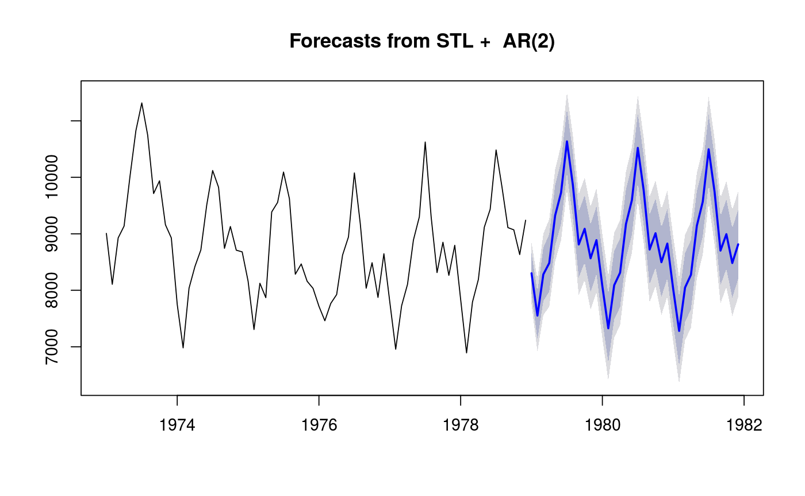
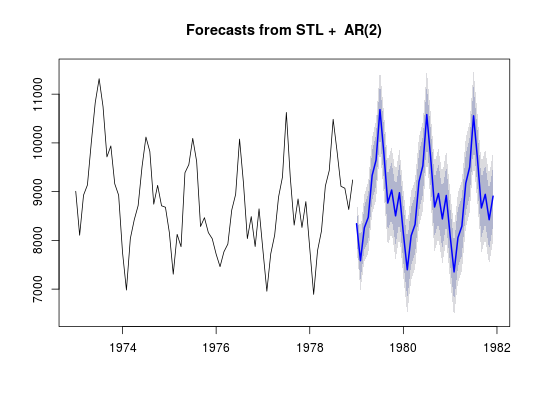
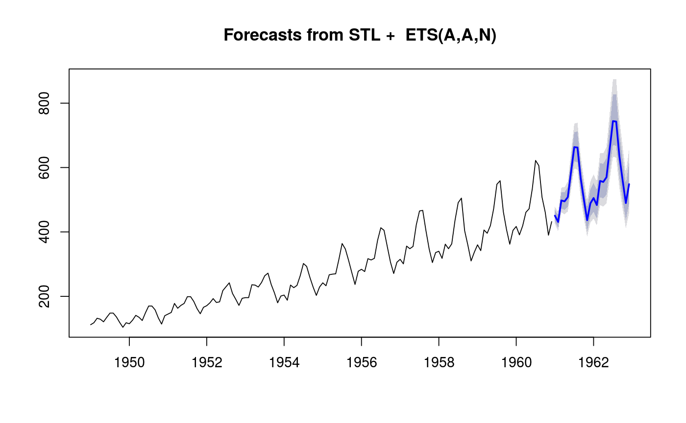

Forecasts of STL objects are obtained by applying a non-seasonal forecasting method to the seasonally adjusted data and re-seasonalizing using the last year of the seasonal component.
# S3 method for stl forecast(object, method = c("ets", "arima", "naive", "rwdrift"), etsmodel = "ZZN", forecastfunction = NULL, h = frequency(object$time.series) * 2, level = c(80, 95), fan = FALSE, lambda = NULL, biasadj = NULL, xreg = NULL, newxreg = NULL, allow.multiplicative.trend = FALSE, ...) stlm(y, s.window = 7, robust = FALSE, method = c("ets", "arima"), modelfunction = NULL, model = NULL, etsmodel = "ZZN", lambda = NULL, biasadj = FALSE, xreg = NULL, allow.multiplicative.trend = FALSE, x = y, ...) # S3 method for stlm forecast(object, h = 2 * object$m, level = c(80, 95), fan = FALSE, lambda = object$lambda, biasadj = NULL, newxreg = NULL, allow.multiplicative.trend = FALSE, ...) stlf(y, h = frequency(x) * 2, s.window = 7, t.window = NULL, robust = FALSE, lambda = NULL, biasadj = FALSE, x = y, ...)
| object | An object of class |
|---|---|
| method | Method to use for forecasting the seasonally adjusted series. |
| etsmodel | The ets model specification passed to
|
| forecastfunction | An alternative way of specifying the function for
forecasting the seasonally adjusted series. If |
| h | Number of periods for forecasting. |
| level | Confidence level for prediction intervals. |
| fan | If |
| lambda | Box-Cox transformation parameter. Ignored if |
| biasadj | Use adjusted back-transformed mean for Box-Cox transformations. If TRUE, point forecasts and fitted values are mean forecast. Otherwise, these points can be considered the median of the forecast densities. |
| xreg | Historical regressors to be used in
|
| newxreg | Future regressors to be used in
|
| allow.multiplicative.trend | If TRUE, then ETS models with multiplicative trends are allowed. Otherwise, only additive or no trend ETS models are permitted. |
| ... | Other arguments passed to |
| y | A univariate numeric time series of class |
| s.window | Either the character string ``periodic'' or the span (in lags) of the loess window for seasonal extraction. |
| robust | If |
| modelfunction | An alternative way of specifying the function for
modelling the seasonally adjusted series. If |
| model | Output from a previous call to |
| x | Deprecated. Included for backwards compatibility. |
| t.window | A number to control the smoothness of the trend. See
|
stlm returns an object of class stlm. The other
functions return objects of class forecast.
There are many methods for working with forecast objects
including summary to obtain and print a summary of the results, while
plot produces a plot of the forecasts and prediction intervals. The
generic accessor functions fitted.values and residuals extract
useful features.
stlm takes a time series y, applies an STL decomposition, and
models the seasonally adjusted data using the model passed as
modelfunction or specified using method. It returns an object
that includes the original STL decomposition and a time series model fitted
to the seasonally adjusted data. This object can be passed to the
forecast.stlm for forecasting.
forecast.stlm forecasts the seasonally adjusted data, then
re-seasonalizes the results by adding back the last year of the estimated
seasonal component.
stlf combines stlm and forecast.stlm. It takes a
ts argument, applies an STL decomposition, models the seasonally
adjusted data, reseasonalizes, and returns the forecasts. However, it allows
more general forecasting methods to be specified via
forecastfunction.
forecast.stl is similar to stlf except that it takes the STL
decomposition as the first argument, instead of the time series.
Note that the prediction intervals ignore the uncertainty associated with the seasonal component. They are computed using the prediction intervals from the seasonally adjusted series, which are then reseasonalized using the last year of the seasonal component. The uncertainty in the seasonal component is ignored.
The time series model for the seasonally adjusted data can be specified in
stlm using either method or modelfunction. The
method argument provides a shorthand way of specifying
modelfunction for a few special cases. More generally,
modelfunction can be any function with first argument a ts
object, that returns an object that can be passed to forecast.
For example, forecastfunction=ar uses the ar function
for modelling the seasonally adjusted series.
The forecasting method for the seasonally adjusted data can be specified in
stlf and forecast.stl using either method or
forecastfunction. The method argument provides a shorthand way
of specifying forecastfunction for a few special cases. More
generally, forecastfunction can be any function with first argument a
ts object, and other h and level, which returns an
object of class forecast. For example,
forecastfunction=thetaf uses the thetaf function for
forecasting the seasonally adjusted series.
stl, forecast.ets,
forecast.Arima.
plot(stlf(AirPassengers, lambda=0))